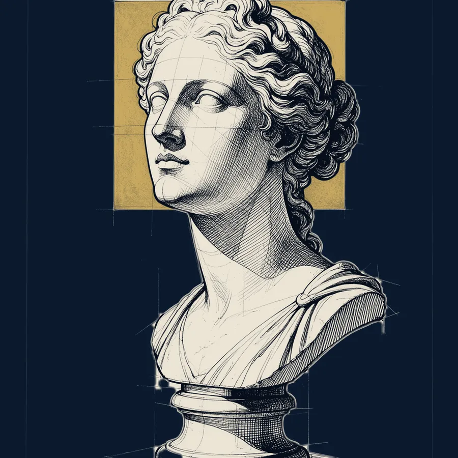
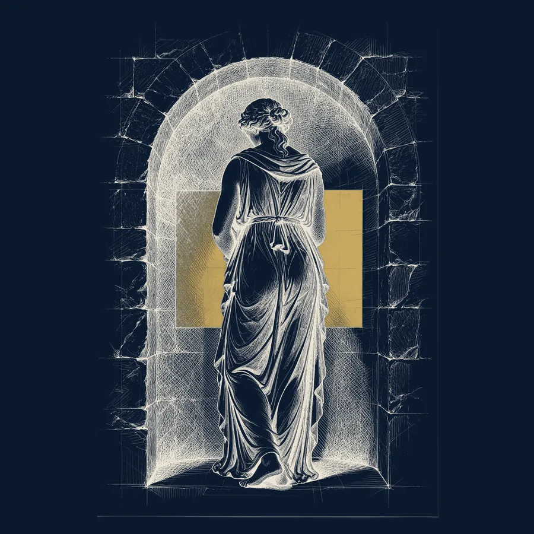
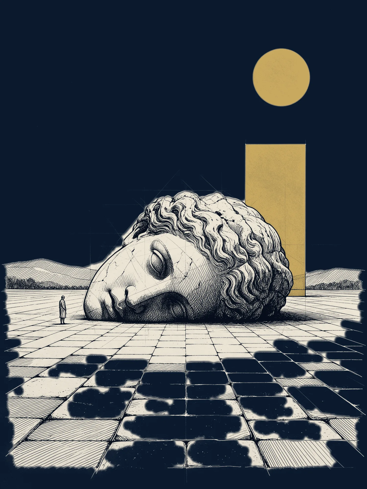
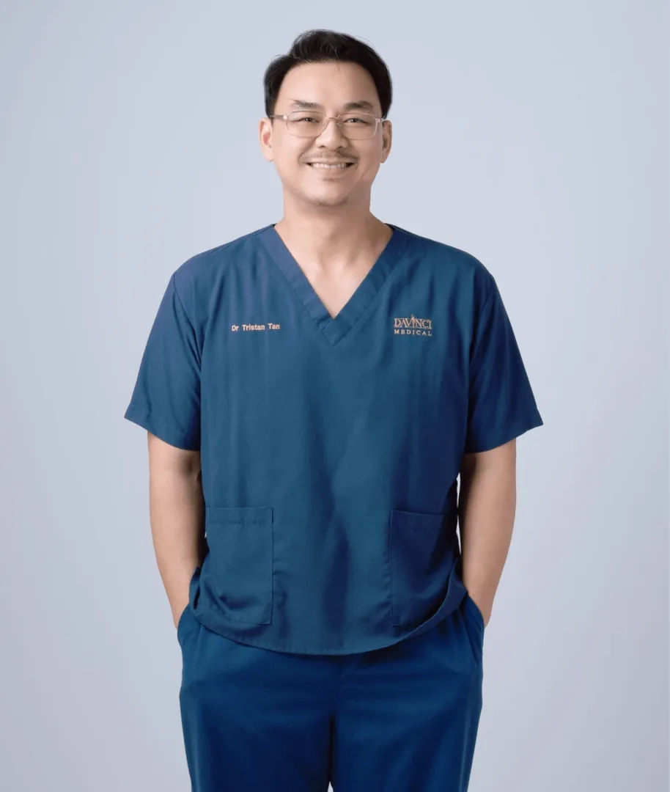
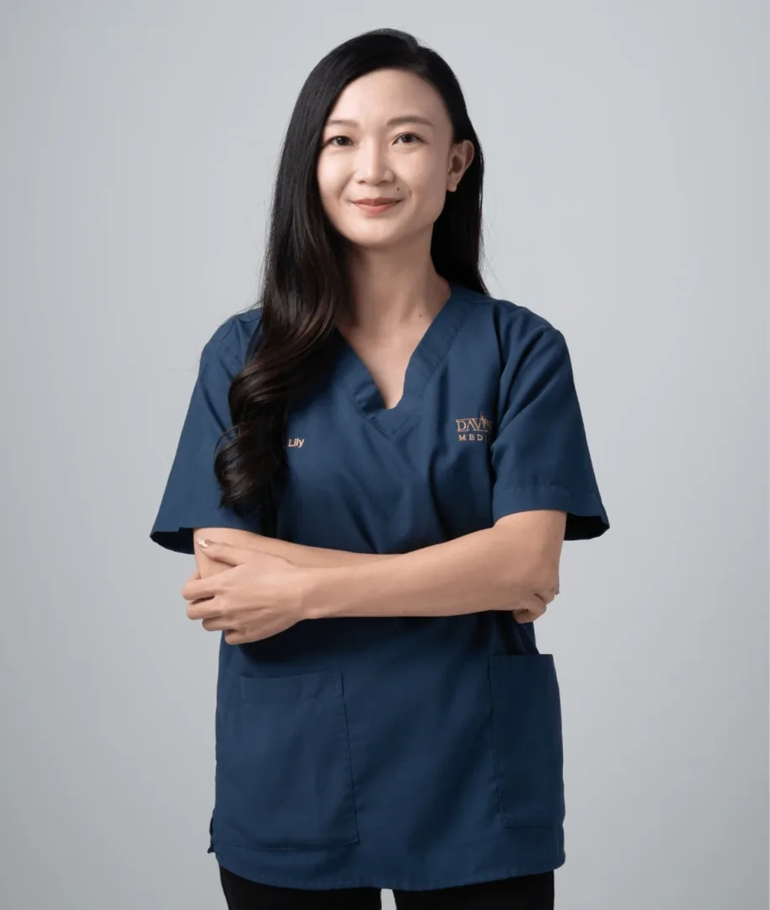
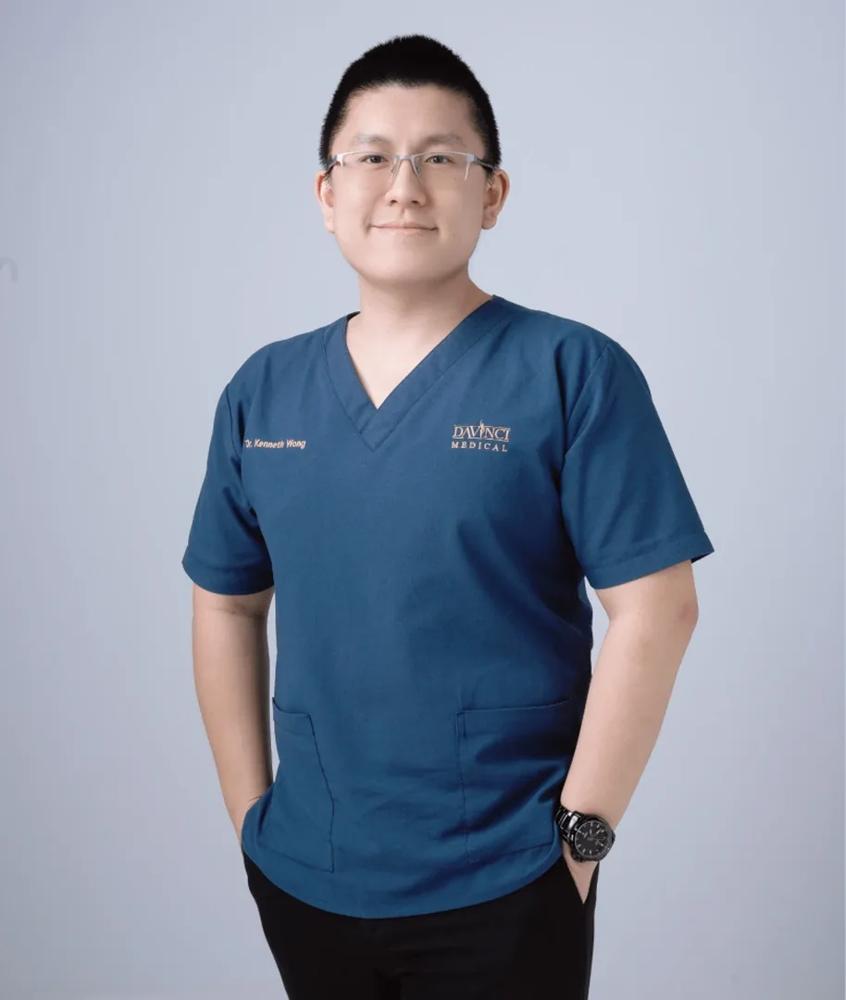
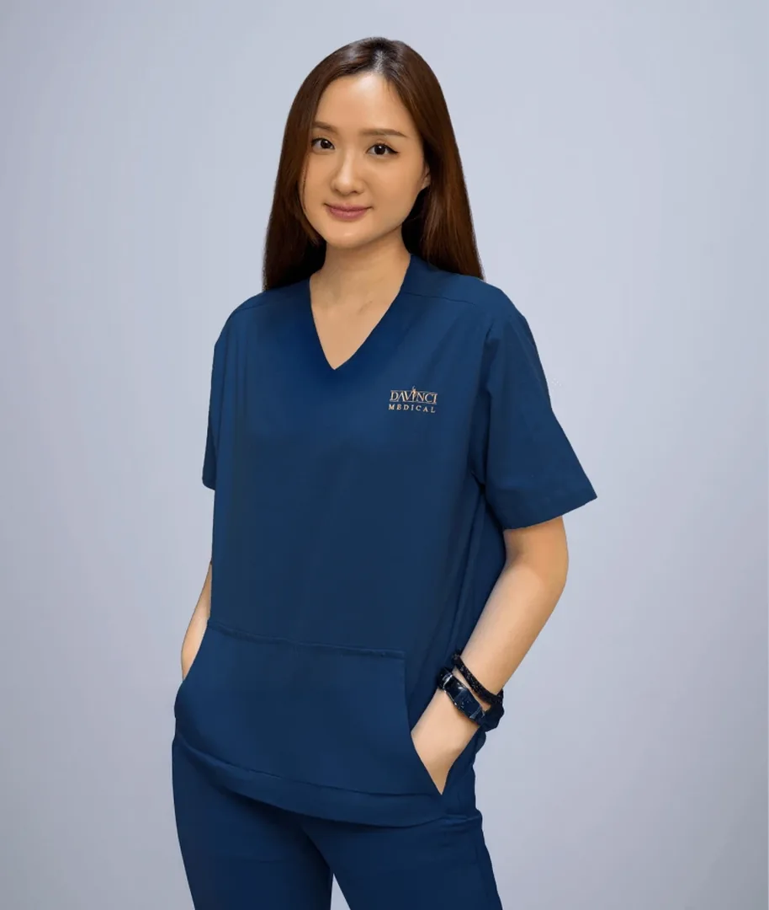
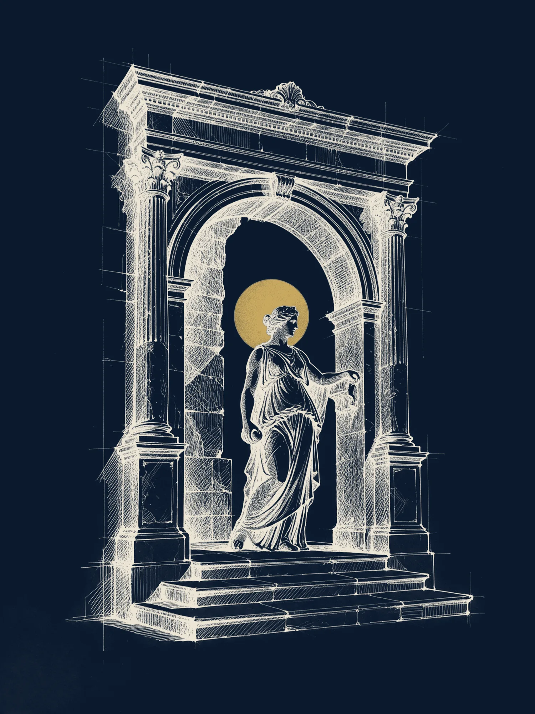

Your aesthetic clinic in Kuala Lumpur
Doctor-led skin and aesthetic care, trusted by patients across Malaysia since 2006. Every treatment begins with an honest clinical consultation, not a sales pitch.
No downtime · Patient-centric · Result oriented · Doctor-led
Promotions and new treatments
Current offers and the newest technology at our four clinics.
All promotions


Doctor-led care since 2006
What stays the same whichever treatment you choose.
Award-winning technology
The first clinic in Malaysia to own PicoSure Pro, and an authentic Ultherapy Prime and Thermage provider.
Transparent consultation
Every journey starts with an honest medical consultation. Pricing is discussed openly based on your needs.
LCP-certified doctors
Our doctors hold the Ministry of Health’s LCP credential and train other doctors across the Asia-Pacific region.
FDA-cleared devices
Energy devices are FDA-cleared and injectables come from the original manufacturers, never grey imports.
 Upper thirdMiddle thirdLower third
Upper thirdMiddle thirdLower thirdStep 1: ConsultationA doctor assesses your skin and listens to what you want to improve. No sales consultant.
Step 2: Skin assessmentSkin analysis and a treatment plan matched to your concern, skin type and lifestyle.
Step 3: Tailor-made treatmentPricing explained before anything starts. FDA-cleared devices and authentic injectables only.
Step 4: Post-treatment careAftercare advice, follow-up reviews and BIO.CX375 skincare to protect your results.
Tap a gold markerEach one opens the treatment family for that area.
Personalised care, not a treatment menu
Da Vinci treatments are built as protocols around you rather than sold one machine at a time.
Treatments our patients come for
Three of the five DV™ signature protocols. Every one starts with a doctor’s assessment.
All treatments A–ZNon-surgical facelift

Ultherapy Prime, HIFU, Oligio X, XERF and Density to lift, tighten and contour without surgery.
Learn morePigmentation and pico laser
PicoSure Pro, PicoWay and Fotona StarWalker for melasma, sun spots and tattoos.
Learn moreSkin glow and skin boosters
Profhilo, Rejuran, Plinest, SKINVIVE and exosomes for hydration and texture.
Learn moreFive DV™ protocols, one plan for you
Each signature treatment combines several technologies in a fixed sequence, adjusted to your skin after assessment.
Scroll to continueDV™ SynergyLift
Non-surgical facelift in one to two sessions: Ultherapy Prime, HIFU or thread lifting for the deep layer, Oligio X, BTL Exion or Density for skin tightening, then collagen biostimulators and post-treatment serum.
- Facelift
- Skin tightening
DV™ PigmentAway
Four to five monthly sessions with the world’s first 755 nm picosecond laser (PicoSure Pro), PicoWay and Fotona StarWalker PQX, supported by Plinest polynucleotides, exosomes and daily skincare.
- Pigmentation
- Melasma
DV™ GlassSkin
AdvaTX yellow laser and pico lasers for tone, medical facials for texture, then skin boosters from Profhilo to Rejuran and Plinest for hydration. Four to five sessions, one month apart.
- Skin glow
- Skin boosters

Body contouringWeight lossDV™ Slim & Sculpt
Fat freezing with Cryofreeze Clatuu Alpha, Fotona StarFormer muscle toning, EndyMed Pure skin tightening and, where appropriate, doctor-supervised weight-loss medication. At least four to five monthly sessions.
- Body contouring
- Weight loss
 Hair lossHair restoration
Hair lossHair restorationDV™ Hair
Fotona HAIRestart and microneedling to stimulate the scalp, polynucleotide and exosome injectables, PDT light therapy and prescribed medications. Three to five sessions depending on treatment.
- Hair loss
- Hair restoration

Care for every concern
Start from what you would like to improve. Each family has its own page, with the devices, downtime and questions answered.
DV™ SynergyLift lifts the face at every level, from the deep support layer to the surface, without surgery. Our doctors combine FDA-cleared ultrasound and radiofrequency devices with collagen biostimulators, and Da Vinci is recognised as Malaysia’s top Ultherapy Prime user.
Read moreDV™ PigmentAway clears melasma, sun spots, freckles and tattoos with picosecond lasers that shatter pigment mechanically rather than with heat. Da Vinci was the first clinic in Malaysia to own PicoSure Pro, recorded by the Malaysia Book of Records.
Read moreSkin boosters improve hydration, texture, elasticity and overall skin quality without adding volume. Da Vinci offers eleven formulations, from hyaluronic acid to polynucleotides, so the choice is made on your skin, not on one brand.
Read moreDermal fillers are hyaluronic acid gels that restore facial volume, soften smile lines and contour the chin and jawline without surgery. Da Vinci uses Belotero, Juvederm and Neauvia, chosen by area and the result you want.
Read moreBiostimulators restore volume now and keep improving for months as your own collagen rebuilds. Da Vinci offers eight formulations for the face, neck, hands and body, performed by LCP-certified doctors who train other doctors on Ellansé.
Read moreActive acne and the scars it leaves are treated as two stages: calm the inflammation first with yellow laser, extraction and medication, then resurface pitted scars with pico or fractional lasers and RF microneedling.
Read moreDV™ Slim & Sculpt combines fat freezing, muscle toning and skin tightening with, where clinically appropriate, doctor-supervised weight-loss medication such as Mounjaro (tirzepatide) and Wegovy (semaglutide).
Read moreDV™ Hair is a non-surgical hair restoration protocol: laser and microneedling to stimulate the scalp, regenerative injectables to feed the follicle, light therapy and prescribed medication to hold the result. Laser hair removal is available for unwanted hair.
Read moreFrom the Fotona family to the UltraClear cold fibre laser and AdvaTX yellow laser, Da Vinci runs one of the broadest laser line-ups in Kuala Lumpur, so the laser is chosen for the problem rather than the other way round.
Read moreThe concerns people associate with plastic surgery, double eyelids, eyebag correction, face lifting, rhinoplasty and gynaecomastia, treated with sutures, energy devices and injectables that work with the structure you already have. No incisions and no general anaesthetic.
Read moreDiscreet, doctor-led treatments for vaginal laxity, dryness and stress urinary incontinence, and for erectile dysfunction and penile enhancement, using Fotona laser, StarFormer electromagnetic stimulation and regenerative injectables.
Read moreRegenerative medicine at Da Vinci is a structured, doctor-led programme rather than a menu item. After a one-to-one consultation your doctor may recommend stem-cell-based planning, a PRP-supported protocol or exosome therapy, across three pathways: skin, hair and scalp, and internal wellness.
Read moreWays to start
Three simple ways to begin, with no invented prices: your doctor quotes after assessment.
For first-time patients on selected laser treatments.
Terms apply, see HSBC Smart Privileges.
Meet the Da Vinci doctors
LCP-certified aesthetic physicians who assess first and recommend second, across four clinics in Kuala Lumpur.

Dr. Tristan Tan
Director & Founder

Dr. Wong Yeut Sun
Clinical Director, Bukit Jalil

Dr. Joycelyn Loh
LCP-Certified Doctor, Cheras

Dr. Tang Yee Li
LCP-Certified Doctor, Bukit Jalil

Dr. Kenneth Wong
Lead Doctor, TRX

Dr. Ho Shuyan
LCP-Certified Doctor

Dr. Lee Mao Sheng
Aesthetic Doctor, Mid Valley
What our patients say about us
Real Google reviews from patients of our Mid Valley clinic, quoted as written.
Candy LawGoogle review, Mid Valley“I love Da Vinci clinic. Beside the friendly environment, the most important is they have many different types of pico laser with FDA approved. So far price is good. Dr very experienced!”
faiz CGoogle review, Mid Valley“Dr Tan listens to his patients and recommends what’s best for them, and the staff are all very friendly. Thank you!”
Janet QuahGoogle review, Mid Valley“I have done 3 procedures at Da Vinci over the last few years and I’m very happy with the results. The doctors are very professional, highly skilled, caring and very people-oriented.”
Joyce ChongGoogle review, Mid Valley“Dr. Tan took the time to address all of my concerns and answer my questions, making me feel confident in the treatment. The level of care and expertise surpassed my expectations.”
Your questions, answered clearly
Common questions about booking and visiting Da Vinci Clinic.
Four clinics in Kuala Lumpur: Mid Valley (The Boulevard Offices), Bukit Jalil (DV Prestige, Bukit Jalil Signatures), Cheras (Taman Connaught) and TRX (Menara Exchange 106). Addresses, phone numbers and WhatsApp links are in the footer.
Monday to Friday 10:00am to 7:00pm, Saturday and Sunday 10:00am to 5:30pm, at every branch.
No. Your first visit is a clinical assessment by a doctor, not a sales consultant. Options and pricing are laid out clearly and you decide.
Our aesthetic physicians hold the Letter of Credentialing and Privileging (LCP) from the Ministry of Health Malaysia, the standard for aesthetic practitioners, and several train other doctors for Merz, Fotona, Neauvia and Plinest.
Yes. Energy devices are FDA-cleared and every injectable is sourced from its original maker. Da Vinci was the first clinic in Malaysia to own PicoSure Pro, recorded by the Malaysia Book of Records.
WhatsApp the branch closest to you, call, or use the form on the contact page. Walk-in consultations depend on doctor availability, so booking ahead is best.
Skin and aesthetic insights
View all
XERF vs Ultherapy Prime: which should you choose?
Both lift and tighten without surgery. One uses dual-frequency radiofrequency, the other micro-focused ultrasound with real-time imaging. Here is how our doctors decide.

Can early acne scar treatment prevent bigger scars?
Why treating active acne and fresh scars early tends to mean fewer sessions later.

Stem cell therapy for hair vs skin: key differences
The same regenerative idea, two very different treatment plans.

How often should you get professional hair treatment?
Session spacing for Fotona HAIRestart, polynucleotides and exosome therapy.
Start your beauty journey today
Every treatment begins with an honest clinical consultation at any of our four Kuala Lumpur clinics. No pressure, no upselling.
Book a consultation